CASE 3 · CERTIFICAMED · 2020-2021
Leadership in Healthtech
How telemedicine research revealed that credibility is part of the product
- 82.5%
- Of responding doctors had already seen a patient online
- 65 Doctors
- Respondents on online care and how they get paid
- 246 Patients
- Respondents on how they organize their own health data
30-SECOND SUMMARY
Problem
Doctors were already seeing patients over WhatsApp, with no records or formal payment, and patients had no verifiable document. The platform existed, but needed validation.
What I did
I led discovery: quantitative research with 65 doctors and 246 patients, competitor analysis, personas and five as-is journeys, plus selecting and mentoring a volunteer designer.
Result
Three insights that reorient the product: credibility is part of the product, formal care must be simpler than informal care, and the patient's obstacle is effort, not lack of interest.
Overview and challenge
CertificaMed is a telemedicine healthtech that already had a working solution when the project started. So the work was discovery and validation, not building from scratch. The project was pro bono and unpaid, which explains the five months dedicated to discovery.
The pandemic expanded an existing practice: doctors seeing patients over WhatsApp, on video calls with no entry in medical records. The model works in practice, but leaves the doctor with no record of the appointment or formal payment, and the patient with no verifiable document.
So the project question was: how can we validate and improve this solution so doctors can practice formally, with records, payment and valid documents, and so patients can trust the care and the documents they receive?
My role
As UX Lead and the bridge between research and decision-making, I was responsible for leading the discovery of an existing telemedicine product. In a scenario where informal care already happened with no records, my focus was to translate that reality into a structured research plan, with quantitative data, personas and as-is journeys.
I worked at the intersection of design, doctors, patients and the business team, and also organized the selection and mentoring of a volunteer designer, with criteria defined before the interviews. The project ran in parallel with my role as Senior Product Designer at Stefanini and, during the project, I was promoted to Design Manager at Gauge.
Process
The work followed a five-stage UX methodology: discovery, ideation, design, validation and evaluation. This case mainly documents discovery and the start of ideation. Design, validation and evaluation appear as next steps.
In discovery, I used quantitative research with doctors and patients, data and competitor analysis, as-is journeys and personas. In ideation, I organized ideas in a collaborative parking lot, separating product, acquisition and content themes.
Activities
Below are some of the activities and stages I carried out in this case.
Recruiting and Mentoring Designers
I opened a public call for a designer who wanted to join the pro bono project in exchange for mentoring and experience on a real project. The position was open to women only, with the goal of opening doors for more women in product design. Two candidates tied at 33 points: Candidate E and Candidate B. To break the tie, I used the qualitative notes recorded in each interview. Both had strong profiles, but my reading of the notes favored Candidate E: she showed pragmatism, the ability to learn from experience and an explicit willingness to contribute to the team. That weighed more than the difference in seniority, because the project was precisely a mentored learning space. I chose Candidate E. She had no deliverables of her own on the project: she supported me in the activities and learned, hands-on, how to produce some artifacts of a real project. After the project, she was hired by Gauge onto my team, when I was already design manager there.
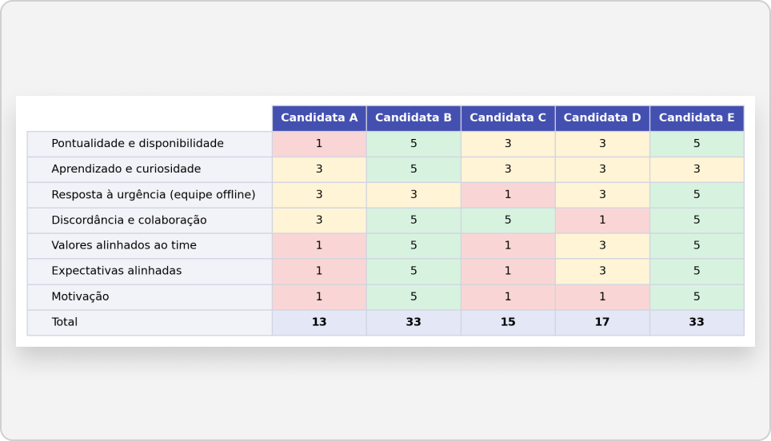
Research with Doctors
With 65 respondents, most doctors had already seen patients online (82.5%), but almost two thirds of those had done at least one informal appointment, over WhatsApp and with no record. This model makes 57.6% of respondents uncomfortable: they feel the care is irregular and not properly paid. As for payment, half work only as a legal entity, and those who work only as individuals are usually in the public health system (SUS), with low volume. Difficulties in online care are mainly technical, such as connection, freezing and image quality, plus billing failures. To use a platform, doctors mostly expect to receive referred patients, get paid through the platform itself and have their schedule available to patients.
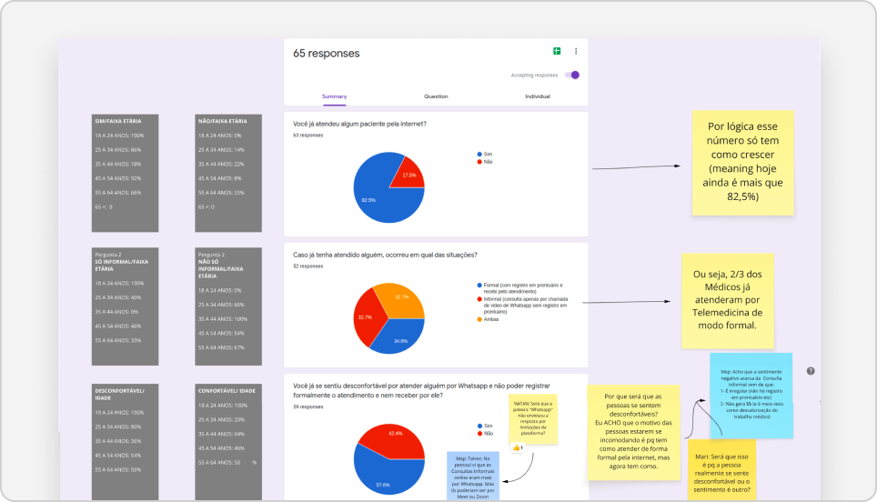
Research with Patients
With 246 respondents, the vast majority (91%) consider it important to organize their health data, but this still happens mostly in physical folders, and app usage is much lower. Almost half (48%) help family members with this task. The biggest difficulties are lack of habit, the feeling that it is too much work and lack of motivation. This suggests the main obstacle is the cost of keeping data organized, not lack of interest. The sample is mostly female and concentrated between ages 40 and 59, so the results indicate directions, not generalizable percentages.Data Analysis
I cross-tabulated doctors' answers by type of care (formal or informal), billing model (individual or legal entity) and age group. I cross-tabulated patients' answers by gender and age group, which showed where the sample is more and less representative.
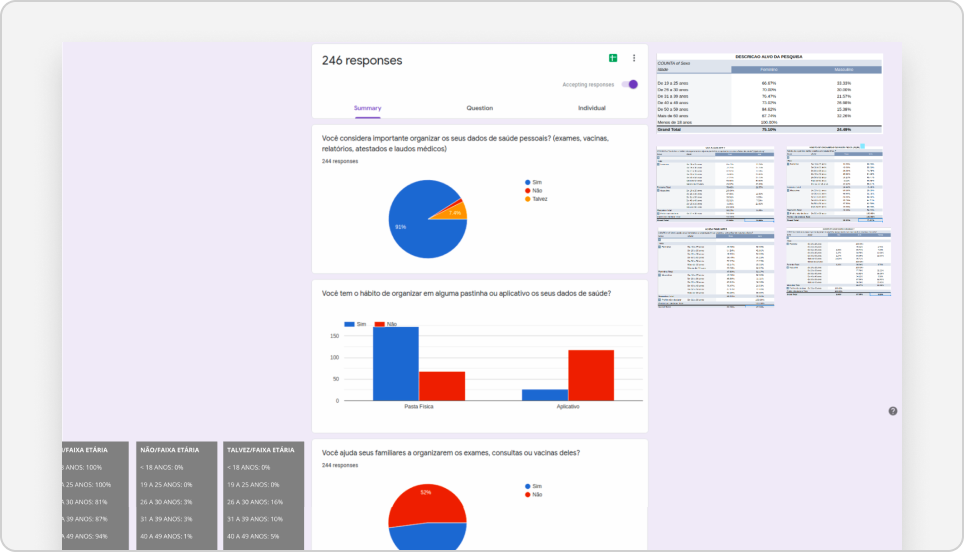
Competitor Analysis
The competitor analysis compares three products from different perspectives, using screenshots and usage notes on Miro. Competitor A is a health insurer's app, from the patient's view: it lets users choose between an immediate micro-consultation and a scheduled one, select the professional and date, and confirm, with help and separate flows per consultation type. The point of attention is that the insurer's brand and the telemedicine platform's brand are codependent. Competitor B is also seen from the patient's side, with a journey from the home page to sign-up, professional search and scheduling. Competitor C is practice management software, seen from the doctor's side: patient records, insurance plans and appointment types are configured in separate fields, with procedures and prices defined once and reused.
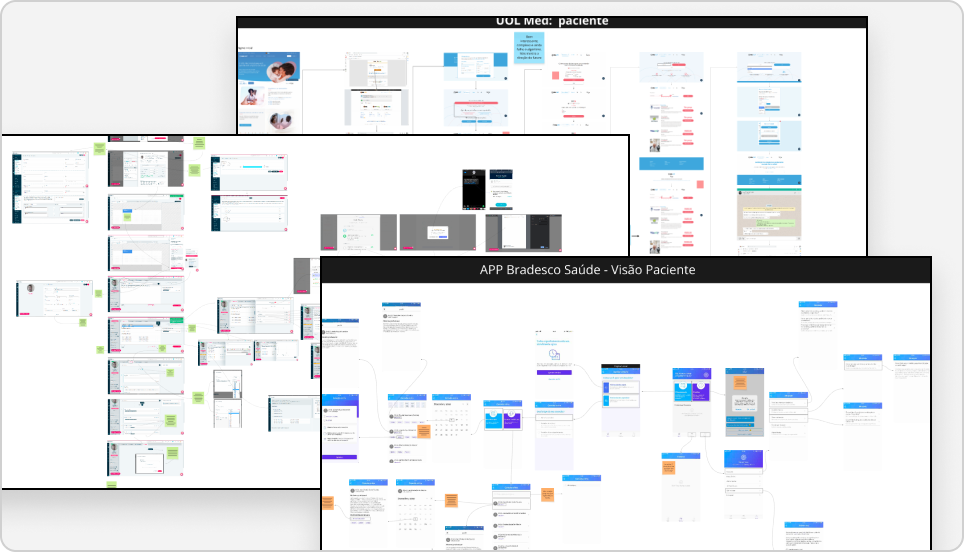
Map of How Doctors Get Paid
To understand why many doctors stay informal, I mapped the ways they get paid. As individuals, doctors can be civil servants, salaried employees or issue receipts through carnê-leão (Brazil's monthly self-assessed income tax). There is also an irregular group: doctors who should pay tax through carnê-leão and do not. As legal entities, the options are the Lucro Presumido regime, which pays less tax, the Simples regime, which pays more, and cooperatives. Hospitals and clinics appear as the main sources of income. The recorded hypothesis is that informal care stems, in part, from the bureaucracy of carnê-leão and bookkeeping. If confirmed, formalization is a service problem, not just a technology one.
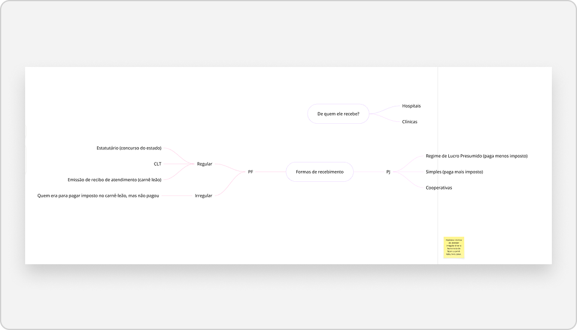
Personas
The personas were built from the survey results. Names and photos are fictional.
Ana Paula Amaral, patient. She is 42, a public school teacher in the Federal District, married, with a 10-year-old son. She has a lot of health data to organize, cannot keep it all in one place and has no time for herself. She looks for simplicity, practicality and relative independence. Her motivation is to set an example at home and ensure a good quality of life for her son.
Marcelo da Cunha, doctor. He is 35, a recently specialized psychiatrist, married, with a two-year-old daughter, in the Federal District. He feels he works a lot and earns little for how much he studied. He takes shifts to maintain his standard of living, suffers from burnout and has high expenses with car, house, school and health insurance, many of them in installments. He wants to earn more and work less, have more quality time with his family and a good retirement. He sees WhatsApp more as an extension of work than as leisure. One concrete pain point: the doctor has to interrupt the appointment to look up the ICD code. Still open: how he gets paid (individual or legal entity) and the platform he uses most (desktop, mobile or tablet).
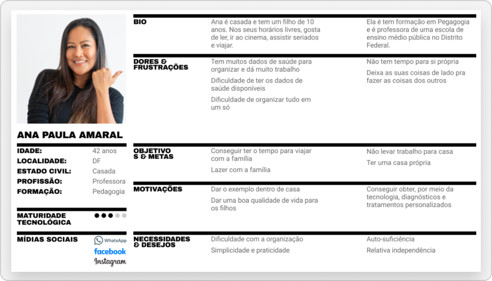
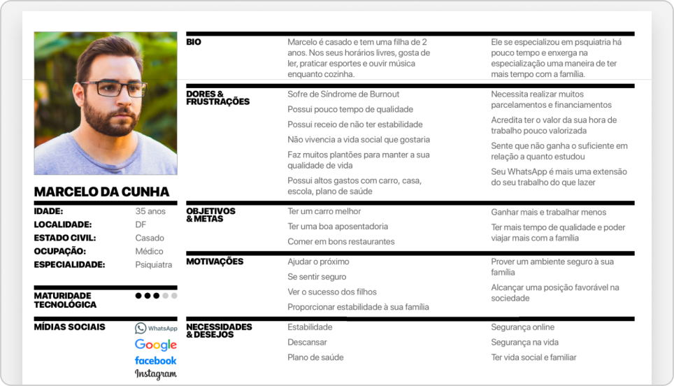
As-Is Journey: doctor
I mapped five current journeys, with the real screens and friction points.
Doctor registration. The team checks the medical license (CRM) on the Federal Council of Medicine portal, keeps the list of doctors in a Google document, makes contact by WhatsApp and email and validates identity on a WhatsApp video call. The main friction is the dependence on several parallel tools and manual checks.
Doctor onboarding. After registering, the doctor sends a selfie holding their ID. Since there is no guidance on how to take the photo, validation often comes back with problems. Then the team validates the data on the CRM portal, with a yes or no branch that leads to different flows.
Doctor's public schedule. When the public schedule is set, the platform creates a Google Calendar named Agenda Pública Certificamed and links the URL to the profile. The doctor adds time slots, and availability appears on the easy booking page. The journey works, but depends on the doctor understanding that a new calendar exists in the account and creating the slots manually.
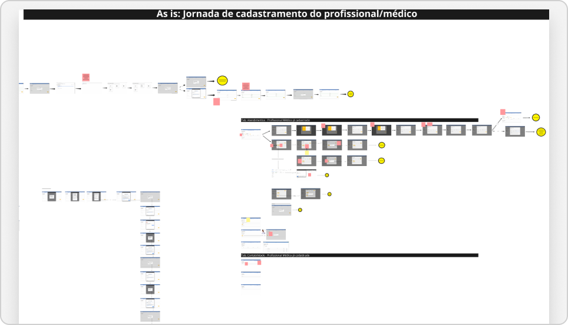
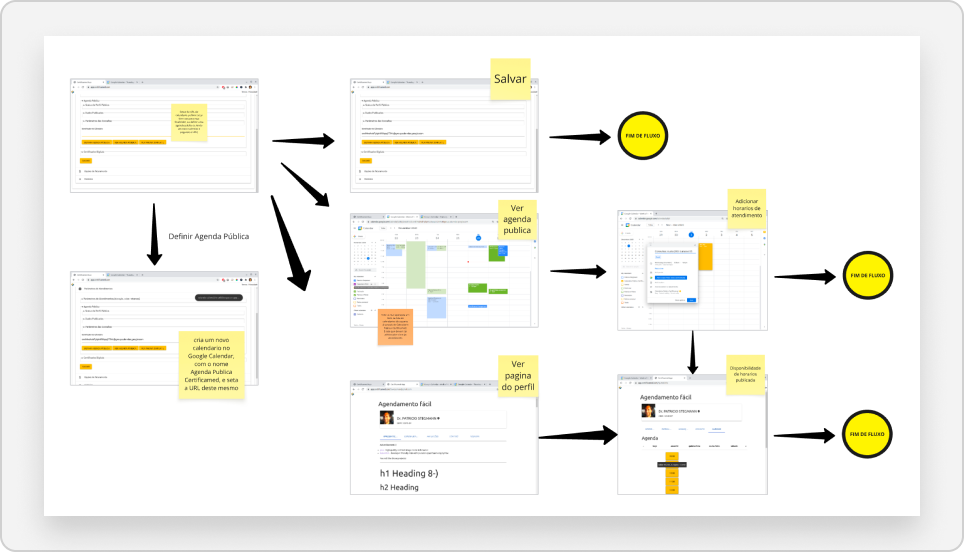
As-Is Journey: patient and support
Patient journey. The patient receives the appointment invitation by email. It is sent from the professional's personal email, which conveys neither professionalism nor credibility. When validating a document, the patient may get confused by the ICP-Brasil digital document validator. A real case shows the problem: a lab tried to verify a test request, could not authenticate the document and accepted the test without validation, because the QR code led to the platform's website and not to a clear verification.
Technical support (internal team). The team receives requests in a ticketing tool, checks registrations, guides doctors on digital signatures and manually updates the list of validated doctors.
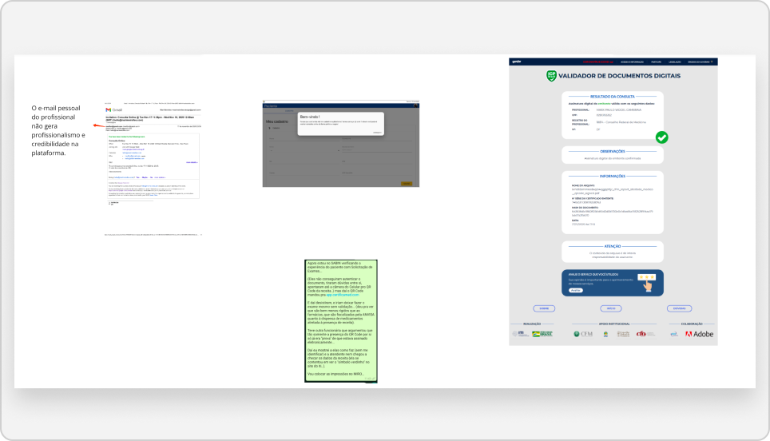
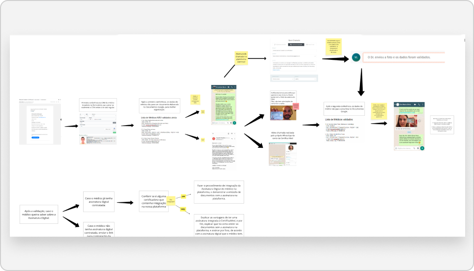
Insights
Credibility is part of the product
Doctors need a record that gives them professional security. Patients need a document anyone can validate effortlessly. Today the platform depends on manual checks and informal channels, which weakens both ends.
Formal care must be simpler than informal care
If doctors already see patients over WhatsApp at no cost, the formal version has to be better at something concrete, such as getting paid, issuing invoices and having a ready schedule, not just at being compliant.
Patients skip organizing health data because of cost, not lack of interest
The platform needs to reduce the effort of keeping data organized, not just offer a place to store it.
Learnings
Rigor in sampling, reading and selection
The first was about the sample: the patient survey has gender and age bias, so I used the numbers as direction. The second was about reading the data: one card on the research board misinterpreted the question about formal and informal care, and reviewing the reading before sharing was essential. The third was about the selection process: a matrix with criteria and levels defined before the interviews helps reduce personal impressions, but the tie-break still depends on qualitative reading, and that needs to be made explicit.
Deciding what was essential with no ready-made structure
Working on a pro bono project alongside another leadership role required prioritization and clarity about what was essential in discovery. I ran interviews and a selection process with criteria defined before the conversations, and mentored in a volunteer context. I also had to deal with a healthcare and telemedicine problem in which regulation, the billing model and document validity matter as much as the interface.
Ideas and Opportunities
In the parking lot, ideas fell into three groups.
Product
A pay-per-use model with no risk for the doctor; invoicing inside the platform; integration of digital signature with document certification; and automated validation of medical license and identity.
Acquisition
Start with small practices, in a micro B2B format, and treat content as the basis for measuring acquisition in the future.
Content
Tips for online appointments, self-examination tutorials, when telemedicine does not work, virtual physical exams and what patients can have at home to help during the appointment.